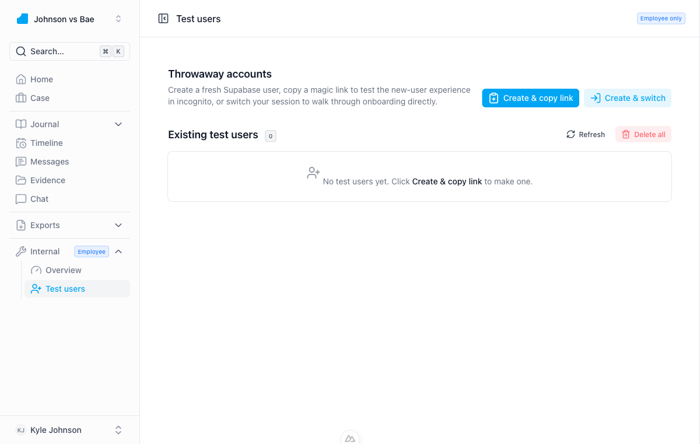
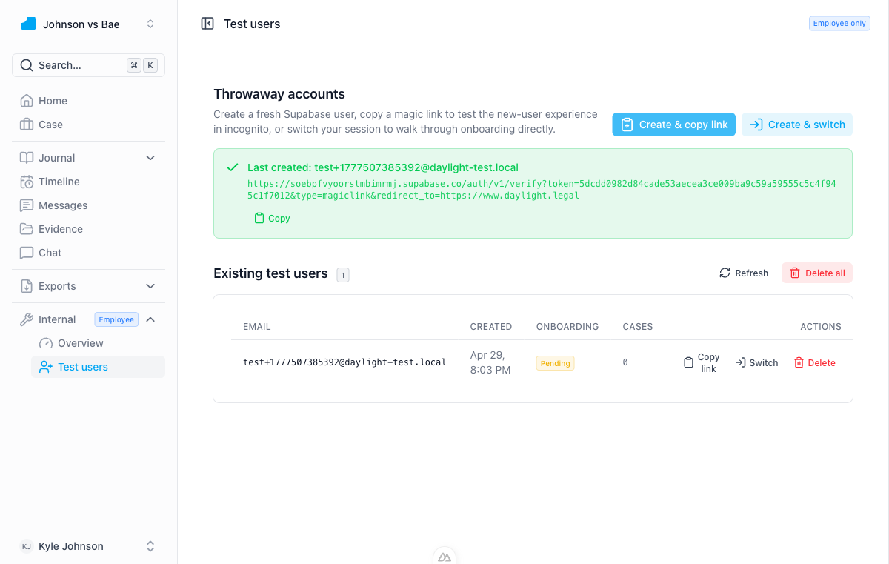
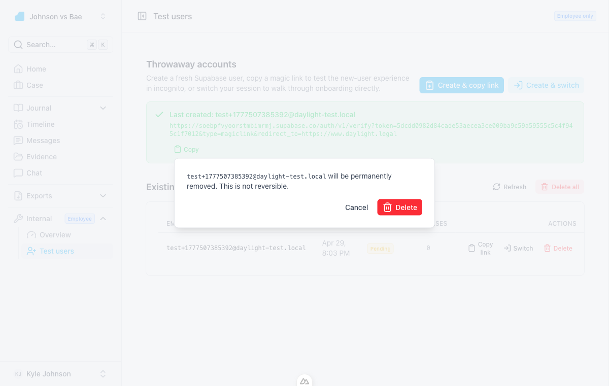
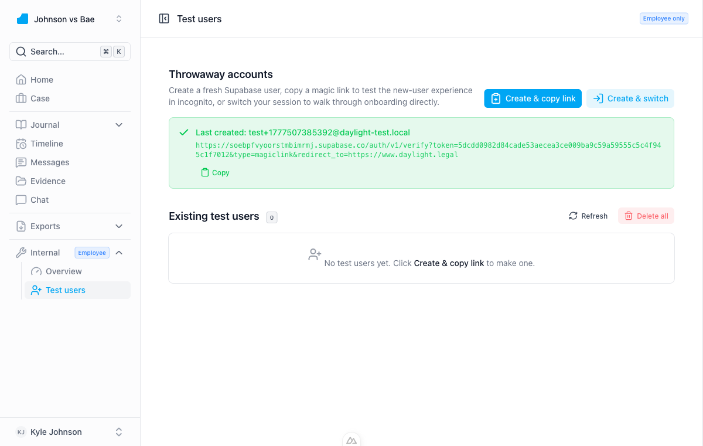
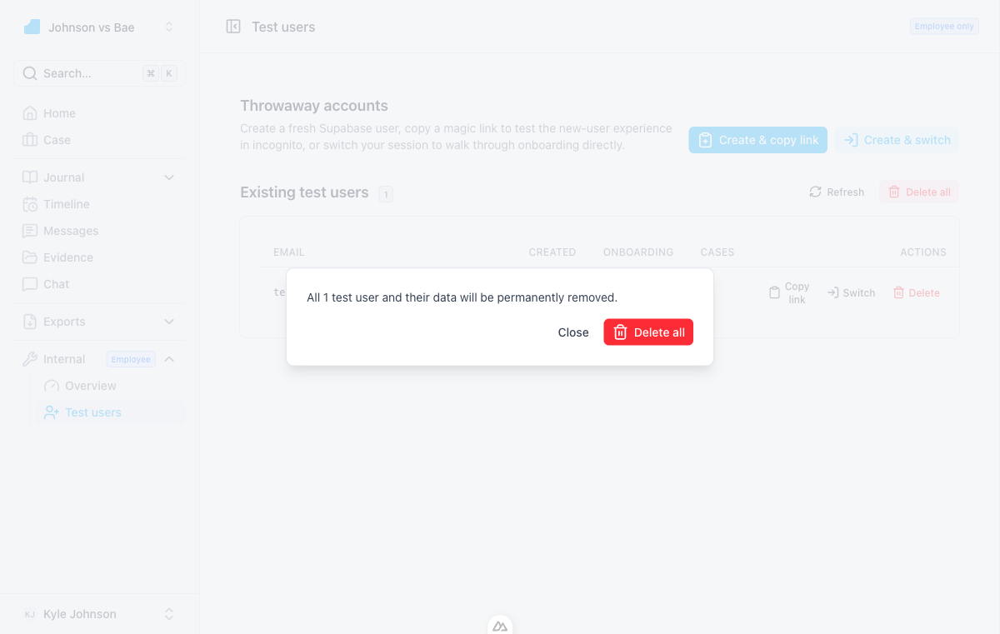
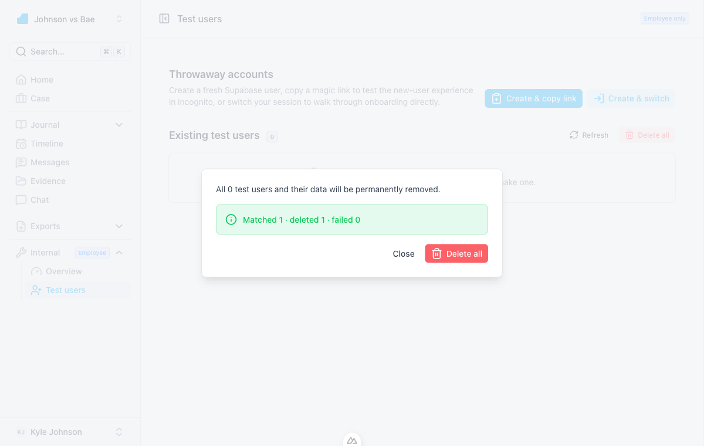
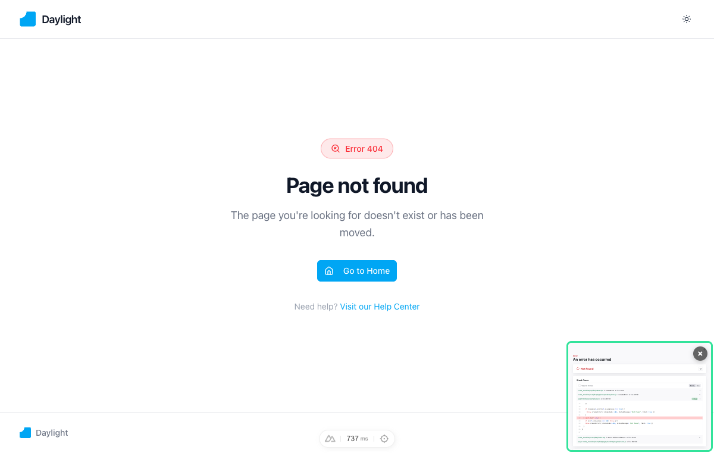
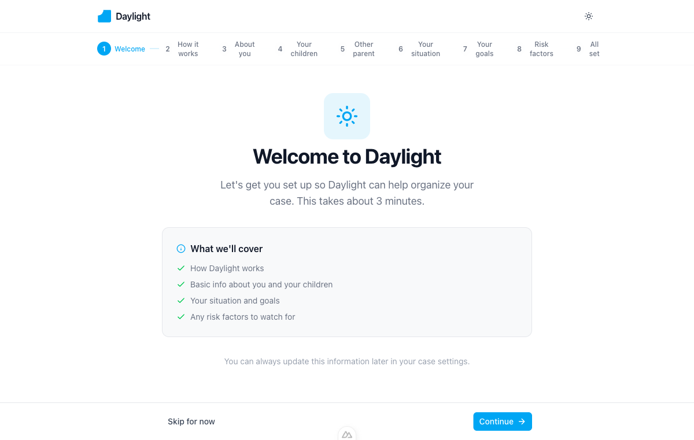

Recreates project-margin's throwaway-user system inside Daylight. Employees can mint a fresh Supabase auth user, copy a magic link to test the new-user experience in incognito (or switch sessions in-place), list existing test users, and hard-delete one or all of them — every action gated purely on profiles.is_employee = true with no NODE_ENV bypass.
0059_profiles_is_test_user.sql — adds profiles.is_test_user with a partial index.src/server/utils/test-user-deletion.ts — only jobs needs manual cleanup; everything else cascades from auth.users.src/server/api/internal/test-users/: create, list, login-link, delete one, bulk delete.src/app/pages/internal/test-users.vue + employee middleware (src/app/middleware/employee.ts) returning 404 (not redirect) for non-employees.src/app/layouts/default.vue): Internal is now a parent menu with Overview and Test users children.Migration applied via Supabase MCP. Column lands as NOT NULL DEFAULT false with a partial index covering only test-user rows.
SELECT column_name, data_type, is_nullable, column_default
FROM information_schema.columns
WHERE table_schema = 'public'
AND table_name = 'profiles'
AND column_name IN ('is_test_user','is_employee');
-- Result
-- [
-- { "column_name": "is_employee", "data_type": "boolean", "is_nullable": "YES", "column_default": "false" },
-- { "column_name": "is_test_user", "data_type": "boolean", "is_nullable": "NO", "column_default": "false" }
-- ]Every user-scoped table in Daylight already cascades from auth.users via ON DELETE CASCADE, with one exception:
| Table | FK target | ON DELETE | Manual cleanup? |
|---|---|---|---|
| profiles | auth.users(id) | CASCADE | No |
| cases, events, evidence, journal_entries, messages, chats, … | auth.users(id) | CASCADE | No |
| subscriptions, bug_reports, exports, … | auth.users(id) | CASCADE | No |
| jobs | auth.users(id) | NONE | Yes — deleted manually before auth.admin.deleteUser |
Each endpoint resolves the caller, reads profiles.is_employee directly from Postgres, and rejects with 403 if it's not true. Login-link and delete endpoints additionally re-verify is_test_user = true on the target row, so an employee cannot use these to mint a magic link or hard-delete a real user.
POST /api/internal/test-users
{
"userId": "6d88e077-cd30-4fb6-96ca-8d86c9681323",
"email": "test+1777507585926@daylight-test.local",
"magicLink": "https://soebpfvyoorstmbimrmj.supabase.co/auth/v1/verify?token=…&type=magiclink&redirect_to=…"
}
GET /api/internal/test-users
{
"testUsers": [
{
"id": "6d88e077-cd30-4fb6-96ca-8d86c9681323",
"email": "test+1777507585926@daylight-test.local",
"full_name": "Test User 1777507585926",
"created_at": "2026-04-30T00:06:26.177586+00:00",
"onboarding_completed_at": null,
"case_count": 0
}
]
}
POST /api/internal/test-users/[id]/login-link ← real user id (Kyle's own)
HTTP 403
{ "statusCode": 403, "statusMessage": "Target is not a test user" }
POST /api/internal/test-users/bulk-delete
{ "matched": 1, "deleted": 1, "failed": [] }

onboarding_completed_at still null, so they'll land in onboarding on first sign-in.

profiles and auth.users were both cleaned.SELECT count(*) FROM public.profiles WHERE is_test_user = true;
-- 0
SELECT count(*) FROM auth.users
WHERE raw_user_meta_data->>'is_test_user' = 'true';
-- 0

Matched 1 · deleted 1 · failed 0, and the list empties.The employee middleware queries /api/profile, checks is_employee === true, and otherwise throws a 404. To verify the gate I temporarily flipped Kyle's flag to false and reloaded the page:

profiles.is_employee = false, /internal/test-users renders the standard 404. No redirect, no leak that the route exists. Kyle's flag was restored to true immediately after.profiles.is_test_user column exists with default falsesrc/server/utils/service-client.ts) so all five endpoints share one pathjobs before calling auth.admin.deleteUser; everything else cascades automatically{ userId, email, magicLink }is_employee = true profilesNODE_ENV bypass)
Initial verification stopped at "the link is generated and copied to the clipboard." The actual click-the-link, sign in, land in onboarding path turned out to have two bugs that only showed up under a real browser. Both fixed in commit 002801c (fix(test-users): make magic link land on /auth/confirm).
/auth/confirm ignored the magic-link URL hash
The page handled the PKCE ?code= flow only. Magic links from auth.admin.generateLink({ type: 'magiclink' }) return their tokens in the URL hash, so the page now also reads the hash and calls supabase.auth.setSession() before redirecting:
// src/app/pages/auth/confirm.vue (excerpt)
if (import.meta.client && window.location.hash) {
const hashParams = new URLSearchParams(window.location.hash.substring(1))
const accessToken = hashParams.get('access_token')
const refreshToken = hashParams.get('refresh_token')
if (accessToken && refreshToken) {
await supabase.auth.setSession({ access_token: accessToken, refresh_token: refreshToken })
}
}redirect_to query string broke the allowlist match
Supabase Auth's redirect-URL allowlist matches by strict equality unless an entry contains a * wildcard. We were passing …/auth/confirm?next=/home; the allowlist had …/auth/confirm; no match, so Supabase silently fell back to the bare Site URL (https://www.daylight.legal) and the link landed on the marketing page with the auth tokens orphaned in the URL hash.
Server log proving the rewrite was happening (before the fix):
[test-users:create] DEBUG redirectTo = "http://localhost:3000/auth/confirm?next=%2Fhome"
[test-users:create] DEBUG action_link = https://soebpfvyoorstmbimrmj.supabase.co/auth/v1/verify?token=…&redirect_to=https://www.daylight.legal
Fix: drop the query string. The confirm page defaults to /home anyway, and the global auth middleware then forwards to /onboarding for users with onboarding_completed_at IS NULL.
// src/server/api/internal/test-users/index.post.ts & [id]/login-link.post.ts
const redirectTo = `${origin}/auth/confirm` // bare path, matches the allowlisthttp://localhost:3000/auth/confirm#access_token=…&refresh_token=…&type=magiclink.setSession, the watcher fired, redirected to /home.onboarding_completed_at IS NULL and forwarded to /onboarding.
test+1777510659485@daylight-test.local on step 1 of the onboarding wizard, signed in via magic link in a clean browser context.SELECT id, email, last_sign_in_at
FROM auth.users
WHERE raw_user_meta_data->>'is_test_user' = 'true'
ORDER BY created_at DESC
LIMIT 1;
-- last_sign_in_at populated → magic link verified server-sidesetSession updates the Supabase JS client in-memory, but the Nuxt module's auth cookie isn't immediately rewritten, so the server keeps seeing the previous user (Kyle) until a hard reload. Workaround: use "Copy link" + incognito. Real fix is a forced window.location.reload() after setSession, or have the "Switch" handler clear cookies first.NODE_ENV fork in dev/set-tier.post.ts still bypasses the employee gate in dev — separate cleanup, intentionally not touched here.